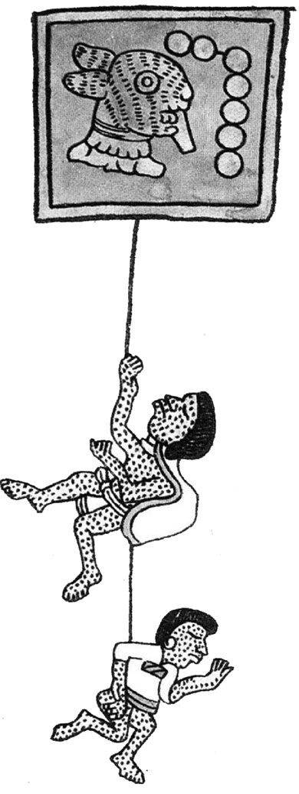

INICIO
Las Enfermedades Infecciosas han tenido en el transcurso de la Historia de la Humanidad una profunda influencia en muchos de los momentos más trascendentales, cambiando porque no decirlo, decisivamente el curso de los acontecimientos y dejando huellas indelebles en la evolución de los pueblos y civilizaciones conocidas. El impacto de estas enfermedades en lo que es hoy el Continente Americano, en los años de su Descubrimiento, Conquista e inicios de la Colonización es el motivo de esta presentación y comentarios. Dr. Jesús Baldomero Valdez Herrera
Llegada de Cristobal Colón a América en su primer viaje en una representación del pintor Díscolo Puebla (1862). Imagen: Wikipedia
LAS EPIDEMIAS ESPAÑOLAS ANTERIORES A 1492
"http://www.acadnacmedicina.org.pe/documentos/Infecciones_y_descubrimiento.pdf"En América Precolombina
Hubo enfermedades infecciosas en la América precolombina sobre todo bajo la forma de endemias que se ha demostrado por el estudio de momias, ceramios y tejidos, casi todos exclusivamente del Perú
Infecciones Pre-colombinas.
- Tuberculosis
- Histoplasmosis
- Leishmaniasis - Uta
- Enfermedad de Chagas
- Amebiasis y parasitosis.
- Verruga Peruana
- Infecciones por salmonella - estreptococos y estafilococos.
- Sífilis endémica-Tétanos
- Gripe
¿Y cuáles fueron las que nos “descubrieron y conquistaron”? -de origen Euroasiático y Africano
Otras Grandes epidemias de Europa
- 1507 año de la Gran Peste en España:
- Peste bubónica y viruela 130500 fallecidos
- Barcelona 3500
- Madrid 3000
- Valladolid 7000
- Ávila 5000
- Zaragoza 12000
- Andalucía 100000
Es importante anotar que la mayor parte de los migrantes al nuevo mundo vinieron de Andalucía y también se debe recordar las circunstancia hace mucho tiempo conocida, pero hoy en día perfectamente comprendida, del rol preponderante que desempeña la inmunidad; así en Europa las enfermedades infecciosas diezmaban más a la población infantil y menos a los adultos debido a que la población en general se había expuesto durante siglos a las grandes epidemias y creado defensas, pero en América no había ningún tipo de protección inmunológica a los nuevos agentes microbianos, virales o bacteriológicos que arribaron con los hombres, mujeres y animales en el proceso del descubrimiento, conquista y colonización
LA PRIMERA EPIDEMIA EN AMÉRICA, EL VIRUS DE LA INFLUENZA
La población indígena americana sufrió un enorme desastre demográfico tras el descubrimiento del Nuevo Mundo en 1492, del cual se habla culpado hasta ahora a la viruela. Pero esta enfermedad no fue introducida en Santo Domingo hasta 1518, fecha en que apenas quedaban 15.600 indígenas de cerca de 3.770.000 que originalmente vivían en las Antillas, según los cálculos más recientes. Por lo tanto existió durante ese cuarto de siglo, de 1492 a 1518, otra causa de mortalidad responsable de la extinción de aquellos indígenas. Su identificación, anunciada recientemente tiene importancia considerable no sólo porque al fin ofrece una explicación racional de la desaparición de los indios tamos, siboneyes, boriquenes y caribes, sino porque la existencia del virus de la influenza en América explica la muerte silenciosa de grandes núcleos de indígenas en el continente americano
No se había ofrecido hasta ahora una explicación plausible y documentada que explicara las causas de tanta mortalidad. Sin embargo, partiendo de los testimonios coetáneos de Cristóbal Colón y de su médico que fueron testigos de los hechos, en documentos auténticos, veraces e incontrovertibles, así como de los datos confirmatorios de Pedro Mártir de Anglería y Gonzalo Fernández de Oviedo, los más extensos y minuciosos de Bartolomé de Las Casas, cuyo padre sufrió la epidemia, así como los de Hernando Colón y Antonio de Herrera, puede afirmarse que la gran mortalidad de los indios y previamente de los españoles se debió a una epidemia de influenza suma o gripe del cerdo.
La pandemia comenzó en La Isabela, isla de Santo Domingo, que era la primera ciudad que se fundaba en el Nuevo Mundo, el día 9 de diciembre de 1493, apenas desembarcados los 1.500 hombres y animales domésticos que acompañaron a Colón en el segundo viaje. Hay que recordar que previamente el Almirante había avituallado la flota entre el día 5 al 7 de octubre de 1493 en La Gomera, Islas Canarias, donde embarcó ocho puercas, que al llegar a tierra el 8 de diciembre de 1493 en La Isabela entraron en contacto con los expedicionarios; también mencionan las crónicas que los caballos que embarcó Colón en Sevilla llegaron perdidos; por lo que no hay que descartar además la posibilidad de influenza equina sólo identificada en estos últimos años.
En pocos años los puercos se multiplicaron y dispersaron por las Antillas en gran número y con ellos la influenza. Todos los cronistas coinciden en la fecha, lugar, manifestaciones clínicas y secuelas de la enfermedad. Fue infecciosa y aguda, extremadamente contagiosa, que afectó bien pronto a todos los miembros de la expedición apenas tocar tierra matando a una tercera parte de ellos; se caracterizaba por fiebre alta, gran postración y dolor de cuerpo, pero a pesar de su mortalidad elevada, los que se recuperaron convalecieron sin recidivas.
Inmediatamente después de afectar a los españoles, aseguran los cronistas que los indígenas comenzaron a morir «en número infinito», no sólo los de la isla de Santo Domingo, sino los de otras Antillas que eran transportados a ella a sustituir los fallecidos.
Por sus características de incubación y evolución queda descartado que esta epidemia de 1493 fuera malaria o fiebre amarilla. Resulta fácil de reconocer la influenza por encajar la descripción clínica tradicional de enfermedad infecciosa aguda, extremadamente contagiosa, caracterizada por fiebre alta, postración, dolor y malestar general con inflamación de la mucosa respiratoria. Aparece de pronto y afecta a grupos amplios de población tras un período de incubación de uno a tres días, y en los casos sin complicaciones la recuperación es la regla tras el curso febril de cuatro a cinco días. Las epidemias de gripe aparecen anualmente durante los meses invernales, como fue el caso en La Isabela, y su mortalidad puede variar, aunque desde las observaciones de Farr en Londres en 1847 se sabe que a veces ocurren cada 30 a 40 años epidemias de gripe con mortalidad excesiva cuyo virus procede del cerdo. Es bien sabido que los virus de la influenza humana son patógenos para los animales domésticos, como el cerdo, el caballo y algunas aves y a la vez, el virus de la influenza suina puede producir la gripe en el hombre. Skehel (1974) ha postulado con base en estudios antigénicos que la epidemia de gripe en 1918 fue debida al virus de la influenza suma. Además se cree que las epidemias de gripe con mortalidad excesiva, no aparecen como mutaciones del virus de la influenza humana, sino por la infección por virus animales particularmente de cerdo. Si analizamos la evolución demográfica de las Antillas desde la llegada de Colón en 1492 y la comparamos con la de Filipinas desde la llegada de Magallanes en 1521 aparecen datos sumamente interesantes. A pesar de tener áreas, extensión geográfica y climas muy semejantes, sus respectivas culturas indígenas tuvieron animales domésticos, portadores potenciales de virus, muy diferentes. Los americanos carecieron prácticamente de animales domésticos que pudieran ser portadores de virus patógenos y sólo quedaron expuestos a ellos al desembarcar Colón, en el segundo viaje, caballos, vacas, corderos, cabras y en especial los cerdos. Por el contrario los filipinos contaron con animales domésticos abundantes, particularmente el cerdo, del que tenían tres especies, pero no usaron el caballo, que fue introducido en Filipinas por los españoles. Estas consideraciones permiten comprender que al contacto con los españoles y sus animales domésticos, en particular el cerdo y el caballo, portadores potenciales de influenza, la población indígena de las Antillas desapareció por falta de inmunidad ante la nueva enfermedad. En 1493 el virus de la influenza suina, causante de la gripe de mortalidad excesiva, constituyó la primera y más grave epidemia que hablan conocido y la causa de su extinción. Por el contrario, los indígenas de las Filipinas, que poseían inmunidad para los virus de la influenza suina por siglos de contacto con el vector, tras la colisión inmunológica con los españoles, florecieron demográficamente y su población pasó de unos 500.000 habitantes en 1521 a cerca de 7500.000 en 1898, año en que concluyó el dominio español, con una tasa de crecimiento anual cercana al 1 por 100. No pasaron inadvertidos para los cronistas americanos los problemas de inmunidad de los indios, pues si Fernández de Oviedo se admiró de su resistencia a las bubas y el mal venéreo, Las Casas advirtió su fragilidad ante las infecciones respiratorias y por ello, con razón, se dijo que el hálito del español mataba el indio.
Peor que la espada un virus mutante
"https://elpais.com/diario/1985/09/27/sociedad/496620017_850215.html"Francisco Guerra, 69 años, catedrático de la facultad de Medicina de la universidad de Alcalá de Henares y ex catedrático de las universidades de México, California, Yale y Londres, ha llegado a la conclusión de que no fue la viruela la única "asesina de indios"
"El secreto que nadie había desvelado hasta ahora", declara, "es que antes de que llegara la viruela a América, en 1518, habían muerto prácticamente todos los indios de Cuba, Puerto Rico, Santo Domingo y Antillas menores".
Concretamente, la viruela entra en América por medio de un negro africano que viaja en un barco portugués. La gripe, según el doctor Guerra, ha llegado antes en la variedad conocida como influenza suina o gripe del cerdo, una infección más grave que la transmitida entre humanos.
El origen y la trayectoria seguida por la epidemia han sido minuciosamente estudiados por el historiador español. Comienza el 5 de octubre de 1493 en la isla de la Gomera.
Cristóbal Colón, que ha iniciado su segundo viaje a América pertrechado con 17 barcos y 2.000 hombres, hace escala en esta isla del archipiélago canario. Además de proveerse de agua y víveres, compra en la Gomera ocho cerdas que irán a engrosar el crecido número de animales domésticos que lleva a las Indias. El 10 de diciembre de 1493, dos días después de llegar a la Isabela y de ser desembarcados los caballos, cabras, vacas y cerdas, comienza la epidemia. El mismo Colón llega a enfermar y son muchos los españoles que mueren. Los indios muertos se cuentan por miles; son tantos que llega un momento en que ya no son enterrados. Según las estimaciones de Francisco Guerra los muertos llegan al millón y medio. "La epidemia es comparable a la de 1918, que produjo también millones de muertos en Europa", afirma el doctor Guerra.
Causada por un virus mutante
Las razones que explican una mortandad tan alta producida por una infección que hoy consideramos benigna estriban en las peculiares características del virus de la gripe. Este virus sufre mutaciones o variaciones erráticas en su material genético y son estos mutantes los que provocan las epidemias más graves. La variedad de la gripe transmitada por el cerdo resulta particularmente maligna para una población que no tiene defensas contra esa enfermedad."Los españoles llevan a América enfermedades que los indios desconocían", declara Francisco Guerra. "Ellos llevaban 30.000 años sin contacto con el continente euroasiático y padecían otro tipo de enfermedades (como las bubas o sífilis) para las que sí tenían inmunidad. La irrupción de los conquistadores alteró todo su sistema ecológico. Porque hay que tener en cuenta que junto a los españoles iban sus animales domésticos y, lógicamente, las enfermedades que transmiten esos animales. Los indios, en cambio, no tenían animales domésticos, a excepción del cobaya y un perro que no ladraba y utilizaban como alimento. Un hecho que avala la teoría de que fueron los cerdos los introductores de la gripe que provocó la epidemia es la constatación de que en Filipinas, también conquistadas por los españoles, no se produjo ningún desastre similar debido a que ya conocían el cerdo".
Cabe preguntarse por qué no se han hallado antes las causas de las epidemias sufridas por los indios caribeflos. Para el doctor Guerra esto no ha sido posible porque hasta hace unos 15 años no se conocía la naturaleza del virus de la gripe, su capacidad mutante. Por otro lado, añade, "las enfermedades cambian mucho en 500 años; en 20 años, incluso. Hasta 1950, por ejemplo, en un 10% de las gripes se producían epistasis, es pedir, se sangraba por la nariz, algo que hoy no ocurre".
El sangrado por la nariz es uno de los síntomas que, según los cronistas de Indias, padecen los afectados por la epidemia. Otros síntomas relatados son el dolor general del cuerpo, gran postración y calenturas. "Hace un par de años ya sabía que esta gran epidemia era de gripe. Porque sólo esta enfermedad", añade el doctor Guerra, "tiene un período de incubación tan corto, dos o tres días. Necesitaba, sin embargo, atar cabos antes de sacar a la luz sus investigaciones".
Ocho cerdas, vehículo de la enfermedad
En este "atar cabos" Francisco Guerra incluye un paciente rastreo por las crónicas de Indias hasta conocer exhaustivamente el calendario de los viajes, estancias y aconteceres de los conquistadores en América. Fruto de esa investigación ha sido el hallazgo de la pieza principal en el rompecabezas de la epidemia: la existencia de las ocho cerdas transporadas por Colón en su segundo viaje. "Estos animales, portadores de un virus de la gripe especialmente agresivo, provocan una alta mortalidad entre una población que no posee ningún tipo de defensa contra la infección"
ENFERMEDADES MORTALES
"https://wikisivar.com/enfermedades-mortales-de-la-conquista-de-america/"
- Viruela
- Sarampión
- Tifus
- Malaria
- Fiebre Amarilla
La viruela fue la enfermedad que más muertes ocasionó en el nuevo continente, siendo ésta, una de las principales causas que afectaron a miles de Tribus y Razas indígenas que vivían regadas en toda la América, incluyendo sus Islas.
Al igual que la Influenza, la Viruela fue una de las enfermedades mortales de la Conquista de América. El primer ataque se ocasionó en Santo Domingo entre los años 1518 y 1519. Traída desde Castillas, también afectó a algunos españoles, pero ninguno perdió la vida, ahora para los indios de la isla, fue mortal.
La Viruela, se propagó tan rápido, que en pocos días ya estaba en Puerto Rico, matando a indios de la Cultura Arawak, los cuales se veían vencidos a causa de las afecciones que ésta trae. Desde las Antillas llegó a México, gracias a un viaje que hizo Hernán Cortés en el año 1520.
La Viruela es una enfermedad infecciosa, a menudo fatal, que se presenta con fiebre seguida de una erupción papular que produce cicatrices. La introducción de la vacuna contra ésta, la desarrolló el médico inglés Edward Jenner en el año 1796, dejando por visto, que para la época de la Conquista de América, los indios de las diferentes etnias y tribus amerindias no tenían protección alguna contra tal amenaza.
|  |
|
| https://scielo.conicyt.cl/scielo.php?script=sci_arttext&pid=S0716-10182003000100003 | https://www.nuevatribuna.es/articulo/cultura---ocio/pandemia-viruela-ano1520-americas-cristobalcolon-salud-historia-cultura/20200331112752172905.html |
El Sarampión apareció en el continente de América justo después, que también atacó a los pocos indios que habían sufrido el gran impacto que les dejó la Viruela entre los años 1518 hasta 1526.
El Sarampión, se extendió desde México hasta Perú, matando a su paso, a casi todos los desprotegidos indios. Ya que ésta, es una enfermedad completamente comunicable de carácter agudo que se trasmite a través de secreciones de los ojos, nariz y garganta, por contagio directo o por infección de gotitas de saliva.
El Sarampión se propaga a través del aire, por tos, estornudos, o al hablar. Los indios que habitaban en continente de América, no tenían ninguno de éstos conocimientos, es por eso, que entre ellos se propagó mucho más rápido y de manera más violenta. La enfermedad mortal es encontrada en todas partes, sin tener en cuenta el clima, raza, o nivel económico.
El Tifus, es otra de las enfermedades mortales que trajeron los europeos al continente de América. Éste, apareció por primera vez en el año 1489, momento en el cual fue introducido desde Chipre hacía España, acabando con la vida de 17.000 soldados de los reyes Católicos.
El Tifus es comunicado a través del piojo corporal o por la pulga de la rata y una epidemia puede aparecer en todo lugar en donde existen hacinamiento de personas, hambre y miseria. Estos factores eran desconocidos por los indios del nuevo mundo, los cuales, al ser tratados como esclavos y llevándolos a una manera de vida sin ningún tipo de comodidad, al igual que los negros de las tribus africanas, era fácil que se contagiaran entre ellos mismos sin saberlo, ocasionándole la muerte a millares.
Aparte de las otras enfermedades mortales de la conquista de América, también existió y existe actualmente la Malaria. Ésta, es propagada por mediación del mosquito anofeles, provocando periódicos ataques de escalofríos, fiebre y sudoración.
A pesar de que muchas de las antiguas Culturas amerindias ya conocían ciertos efectos, sumándole las otras enfermedades traídas por los conquistadores españoles, se veían muy débiles y cualquier afección aparte de la que ya se habían contagiado les causaba hasta la muerte
La Fiebre Amarilla es una enfermedad infecciosa aguda producida por un virus filtrable que se transmite por la picadura de un mosquito, el Aëdes aegypti, en cuyo cuerpo vive y se reproduce el virus.
Por lo general, después de 3 a 6 días de la picadura del mosquito, la cara se inflama y pone roja, los ojos se cubren con una especie de velo, los labios y la lengua adquieren un color rojo vivo, se registra fiebre alta con dolor de cabeza y espalda. Al pasar 2 o 3 días más, la temperatura desciende por debajo de lo normal, el pulso se hace y lento y la piel se pone fría y adquiere el color amarillento que da nombre a la enfermedad.
Hasta este siglo, en grandes extensiones de América del Centro y del Sur se consideran inhabitables a causa de los desastrosos efectos de la Fiebre Amarilla. Desde su propagación en África Occidental entre los siglos XVI y XVII, saltó al Nuevo Continente debido al tráfico de esclavos
Las distintas razas de esclavos africanos, ya habían creado cierta inmunidad a esta feroz enfermedad. Por el contrario, tanto indios como colonos europeos eran tan fuertemente golpeados por la fiebre amarilla que les ocasionaba la muerte.
EL PAPEL DE LOS JESUITAS
En la colonización inglesa de Norteamérica hay hechos trascendentales no solamente por la actitud inhumana y sumamente cruel de los “Peregrinos” y colonizadores que llevaron al exterminio sistemático de las etnias aborígenes, e igualmente pensaban, y hasta tal vez con más fanatismo que el Señor y la Divina Providencia, gracias al efecto devastador de las enfermedades en los indígenas, estaba del lado de los europeos y eran designios divinos la gran mortandad que ocurría en los naturales.
Están muy bien documentadas, inclusive con el consentimiento y subvención del Rey de Inglaterra, las circunstancias del exterminio de los indígenas, ya que les proporcionaban engañosamente mantas y otras prendas de personas que habían tenido por ejemplo viruela o sarampión, para que se enfermaran y murieran masivamente, dejando el territorio libre para colonizarse, “limpio de los aborígenes”, creyendo ellos interpretar la verdadera voluntad de Dios, a la vez que los colonizadores ingleses eran los elegidos(1,2,4).
Los indios […] afirman que antes de la llegada de los cristianos, y antes del brote de viruela que les afectó, eran diez veces más numerosos de los que son ahora, y que la enfermedad ha diezmado su población. Adriaen Van der Donck, Nueva Holanda, 1656
Harás bien en inocular a los indios usando mantas o intentar cualquier otro método que te pueda servir para extirpar esta raza execrable. Sir Jeffrey Amherst, 1763
El Señor puso fin a sus luchas castigándoles con la viruela (…) así el Señor apaciguó su espíritu peleador e hizo espacio para la siguiente parte de su ejército. William Wood, Nueva Inglaterra, 1634
El terror fue universal. El contagio aumento a medida que avanzaba el otoño; y cuando llego el invierno, los estragos causaron gran consternación. Las festividades de los hurones se convirtieron en un periodo de luto; y tal era el desánimo y el desaliento que los suicidios llegaron a ser frecuentes. Canada francés, 1634
En contraposición a todo lo relatado, hay en América un hecho sin precedentes, y se refiere al surgimiento del pensamiento de los jesuitas quiteños, y nace del estudio y observación de estos sacerdotes progresistas dedicados además a la enseñanza en colegios de la entonces Audiencia Real de Quito, hoy Republica del Ecuador, que contribuyeron decisivamente en la fundación de la Universidad de San Gregorio Magno de Quito donde se dictaban cursos de una calidad nada inferior a los de las mejores universidades europeas .
“En una época de tal dominio religioso en que se creía resolver el curso de las epidemias mediante rogativas y procesiones de los santos y vírgenes de las órdenes religiosas de la ciudad…”, asocian los jesuitas el origen de las enfermedades epidémicas a los microbios debido a la observación científica atreves del uso del microscopio, con el hallazgo por ejemplo de microorganismos en el vinagre, mostos, leche, las secreciones y la sangre de los enfermos.
En 1636 se produce uno de los mayores descubrimientos de la medicina, ya que en el pueblo de Malacatos en el Ecuador el jesuita Juan López recibe el secreto de las propiedades curativas de las fiebres tercianas y cuartanas (el paludismo) de la corteza del árbol de la quina del médico indígena y cacique Pedro de Leiva y que sirvió para curar la malaria de la Condesa de Chinchón, Doña Francisca Enríquez de Ribera según cuenta la tradición, pero en realidad todo indica que el enfermo de tercianas fue más bien el propio virrey Don Luis Jerónimo de Cabrera y Bobadilla Cuarto Conde de Chinchón (6,7).
Hoy en día la población mundial ha llegado a los 7 mil millones con el nacimiento de una niña el día 31 de octubre de 2011 a media noche en Filipinas, en ese instante. La humanidad está envejeciendo y la expectativa de vida es cada vez mayor al momento del nacimiento (la del Perú es de 72.2 años) y seguramente el descubrimiento de la penicilina y los antibióticos así como el uso sistemático de las vacunas han cambiado el panorama mundial de la demografía y medio ambiente del ser humano
El premio Nobel de química el Holandés Paul Crutzen en el año 2000 denomina de antropoceno a la era actual que estamos viviendo y que se habría iniciado o bien con el inicio de la agricultura o más recientemente con la Revolución Industrial del siglo XIX, es la era del hombre destructor que dejará como legado los restos de numerosas ciudades, un universo de desechos industriales y el plástico que permanecerá intacto durante siglos.
No cabe duda entonces que las infecciones en el Nuevo Mundo, a pesar de los escasos conocimientos de la medicina de la época al igual que en el resto de la humanidad, han sido protagonistas de la demografía, del medio ambiente, de los ecosistemas y de los cambios trascendentales de la población mundial y de su habitad, el planeta tierra
RESPUESTA INMUNITARIA
https://medlineplus.gov/spanish/ency/article/000821.htm
Es la forma como el cuerpo reconoce y se defiende a sí mismo contra bacterias, virus y sustancias que parecen extrañas y dañinas.
Es la forma como el cuerpo reconoce y se defiende a sí mismo contra bacterias, virus y sustancias que parecen extrañas y dañinas.
Las células corporales tienen proteínas que son antígenos. Éstos incluyen a un grupo llamado antígenos HLA. Su sistema inmunitario aprende a ver estos antígenos como normales y por lo general no reacciona contra ellos.
Inmunidad Innata
La inmunidad innata, o inespecífica, es un sistema de defensas con el cual usted nació y que lo protege contra todos los antígenos. La inmunidad innata consiste en barreras que impiden que los materiales dañinos ingresen en el cuerpo. Estas barreras forman la primera línea de defensa en la respuesta inmunitaria. Ejemplos de inmunidad innata abarcan:
- El reflejo de la tos
- Las enzimas en las lágrimas y los aceites de la piel
- El moco, que atrapa bacterias y partículas pequeñas
- La piel
- El ácido gástrico
La inmunidad innata también viene en forma de químico proteínico, llamado inmunidad humoral innata. Los ejemplos abarcan: el sistema de complementos del cuerpo y sustancias llamadas interferón e interleucina 1 (que causa la fiebre).
Si un antígeno traspasa estas barreras, es atacado y destruido por otras partes del sistema inmunitario.
Inmunidad Adquirida
Es la inmunidad que se desarrolla con la exposición a diversos antígenos. El sistema inmunitario de la persona construye una defensa contra ese antígeno específico.
Inmunidad Pasiva
La inmunidad pasiva se debe a anticuerpos que se producen en un cuerpo diferente del nuestro. Los bebés tienen inmunidad pasiva, dado que nacen con los anticuerpos que la madre les transfiere a través de la placenta. Estos anticuerpos desaparecen entre los 6 y los 12 meses de edad.
La inmunidad pasiva también puede deberse a la inyección de antisuero, que contiene anticuerpos formados por otra persona o animal. Esto brinda protección inmediata contra un antígeno, pero no suministra una protección duradera. La inmunoglobulina sérica (administrada para la exposición a la hepatitis) y la antitoxina para el tétanos son ejemplos de inmunidad pasiva.
ENTREVISTA
https://www.agenciasinc.es/Entrevistas/La-viruela-y-el-sarampion-fueron-perfectos-aliados-en-el-exito-de-conquista-espanola-de-America| ¿Cuál fue la repercusión de la conquista de América en la salud de sus habitantes? |
| Un desastre demográfico, una catástrofe ecológica. En menos de un siglo desaparecieron de su propio mapa varias decenas de millones de habitantes indígenas. Por ejemplo, el 90% de la población caribe y arawak murió en los veinte años siguientes a la llegada de Cristóbal Colón y sus hombres en 1492. |
| ¿Y de esas muertes, cuánta culpa tuvieron las enfermedades? |
| Este fenómeno representa un excelente y dramático ejemplo de lo que hoy se llama patología del viajero y del inmigrante. Las enfermedades infecciosas fueron un aspecto más, sin duda muy importante, del intercambio de personas, bienes y microbios entre dos zonas del planeta separadas durante milenios por un gran mar… y por el océano del desconocimiento mutuo. |
| ¿Cómo se contagiaban esas patologías? |
| Dependía de la enfermedad: por vía respiratoria (gripe, viruela, sarampión), por contacto directo (viruela), por vía digestiva (diarreas, fiebre tifoidea), picaduras de piojos (tifus exantemático) y, más tarde, por picaduras de mosquitos (malaria y fiebre amarilla). |
| ¿Las enfermedades procedentes de Europa causaron más muertos que las armas? |
| Sin duda. Es materialmente imposible que las armas mataran más que las enfermedades y otros factores asociados. Pensar que algo más de cien hombres y unos cuantos caballos dirigidos por Hernán Cortés barrieron a un imperio enorme muy bien organizado y de alto nivel de civilización, como el azteca de Moctezuma (México), es desconocer la realidad de la historia. Algo similar ocurrió en la aventura de Pizarro en el imperio Inca de Huayna Cápac (Perú). La viruela y el sarampión fueron unos perfectos aliados –involuntarios, no intencionados– en el éxito de conquista española. |
| ¿Es que en algún caso las enfermedades fueron aliados intencionados? |
| Sí. Algo más tarde, los ingleses y holandeses causaron estragos entre los nativos de la costa este americana (actual Massachusetts) infectándolos y matándolos con mantas contaminadas con el virus de la viruela. España no hizo lo que hoy llamamos guerra biológica, por muy pedestre que fuera entonces. |
| ¿Cuál es la primera epidemia originada por los conquistadores de la que se tiene constancia? |
| La hipótesis más aceptada por la comunidad científica internacional es que pudo ser la gripe suina o gripe del cerdo, aunque existen voces discrepantes. Llegó una primera oleada en el segundo viaje de Cristóbal Colón, en 1493. Se diseminó con enorme facilidad y causó un gran daño. |
| ¿En qué medida influía la falta de higiene de los largos viajes en barco? |
| Las condiciones debieron de ser extraordinariamente malas: poco espacio –apenas unos metros cuadrados–, mucha gente, convivencia muy cercana de hombres y animales y unas condiciones alimenticias, sanitarias e higiénicas muy deficientes durante varias semanas. El caldo de cultivo ideal para el intercambio de microorganismos entre los marineros y entre los animales de conquista y de colonización y las personas. |
| ¿Qué dolencias padecían los navegantes en los viajes? |
| Diarreas, escorbuto, deshidratación, fiebres... Aunque, contra lo que dicen algunos, en el primer viaje colombino no hubo nada destacable desde el punto de vista de la salud de los viajeros. El propio Cristóbal Colón lo dejó escrito en su diario: “Loado sea Nuestro Señor, hasta hoy de toda mi gente no ha habido persona que le haya mal de cabeza ni estando en cama por dolencia, salvo un viejo de dolor de piedra, de que él estaba toda su vida apasionado, y luego sanó al cabo de dos días”. Es decir, un vulgar cólico nefrítico. |
| ¿Afectaban por igual las patologías a europeos y americanos? |
| La mayor parte de los europeos que llegaron a América tuvieron los virus en la etapa infantil y pudieron pasar las viriasis en esa etapa, por lo que ya disponían de inmunidad natural protectora. En el caso de los indígenas, la falta de contacto previo supuso una ‘virginidad inmunológica’, una falta de respuesta defensiva frente a las nuevas infecciones. Esta es la clave del desastre provocado por la gripe (1493), la viruela (1519-20) y el sarampión (en los años treinta de los 1500). |
| Hasta 1492, ¿qué enfermedades eran exclusivas de cada uno de los dos continentes? |
| La pregunta no tiene una fácil respuesta. Como norma general, y dicho con la máxima prudencia y sin afán dogmático, las viriasis (viruela, sarampión, gripe) eran propias del Viejo Mundo (Europa), mientras que en el otro lado del océano pudieron existir, antes del encuentro de 1492, numerosas patologías infecciosas como las parasitosis, algunas enfermedades bacterianas, tuberculosis y determinadas treponematosis. |
| ¿Cuál fue el papel de los esclavos africanos llevados a América en la transmisión de enfermedades? |
| Este aspecto es muy interesante y también motivo de discusión entre los expertos. Los esclavos fueron víctimas de las enfermedades y portadores involuntarios de microbios. Su procedencia africana les hacía candidatos a estar colonizados o infectados por protozoos como los plasmodios, los agentes causales de la malaria. Algo parecido ocurrió a partir del siglo XVII con la fiebre amarilla, una infección producida por un flavivirus cuyo vector es el mosquito de la especie Aedes aegypti. Pudo llegar a las Antillas en 1648 y enseguida a la península del Yucatán, en Nueva España |
| ¿Hubo también flujo de enfermedades de América hacia Europa? |
| Este es un capítulo polémico. Sin duda, la sífilis ocupa el principal protagonismo. Su origen ha generado un debate, no cerrado aún, que dura ya más de cinco siglos. Las opiniones de los que consideran que la marinería de Colón la trajo a la vuelta del primer viaje –otros dicen el segundo– chocan con los que piensan que ya existía en la vieja Europa mucho antes del encuentro. Nosotros hemos dedicado varios años a estudiar este asunto y llegamos a la conclusión de que la sífilis existía muy probablemente en Europa antes de los viajes colombinos. Pero lo más interesante de nuestra aportación fue que la hipótesis colombina, tal como se presentó desde el principio por algunos de los más renombrados cronistas de Indias, y se ha mantenido durante más de quinientos años, es, sencillamente, una enorme falsedad histórica. Colón y sus marineros no trajeron la sífilis al regresar del primer viaje. |